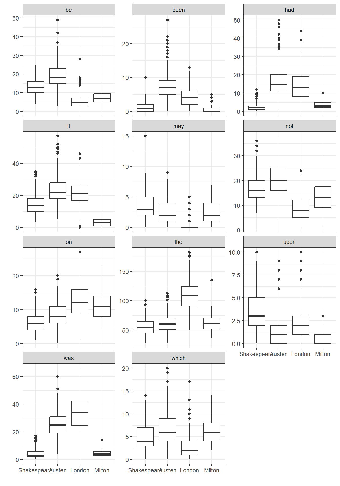

knitr::opts_chunk$set(comment = NA)
library(broom)
library(knitr)
library(MASS)
library(nnet)
library(tidyverse)
theme_set(theme_bw())28 Multinomial Logistic Regression
28.1 R Setup Used Here
28.1.1 Data Load
authorship <- read_csv("data/authorship.csv", show_col_types = FALSE) 28.3 Focus on 11 key words
Again, following Simonoff, we will focus on 11 words from the set of 69 potential predictors in the data, specifically…
- “be”, “been”, “had”, “it”, “may”, “not”, “on”, “the”, “upon”, “was” and “which”
auth2 <- authorship |>
select(Author, BookID, be, been, had, it, may, not,
on, the, upon, was, which)
auth2.long <- auth2 |>
gather("word", "n", 3:13)
auth2.long# A tibble: 9,251 × 4
Author BookID word n
<fct> <dbl> <chr> <dbl>
1 Austen 1 be 13
2 Austen 1 be 9
3 Austen 1 be 23
4 Austen 1 be 20
5 Austen 1 be 16
6 Austen 1 be 12
7 Austen 1 be 11
8 Austen 1 be 21
9 Austen 1 be 7
10 Austen 1 be 14
# ℹ 9,241 more rows28.3.1 Side by Side Boxplots
ggplot(auth2.long, aes(x = Author, y = n)) +
geom_boxplot() +
facet_wrap(~ word, ncol = 3, scales = "free_y") +
labs(x = "", y = "")
Oh! do not attack me with your watch. A watch is always too fast or too slow. I cannot be dictated to by a watch.
28.4 A Multinomial Logistic Regression Model
Let’s start with a multinomial model to predict Author on the basis of these 11 key predictors, using the multinom function from the nnet package.
authnom1 <- multinom(Author ~ be + been + had + it + may + not + on +
the + upon + was + which, data=authorship,
maxit=200)# weights: 52 (36 variable)
initial value 1165.873558
iter 10 value 293.806160
iter 20 value 273.554538
iter 30 value 192.309644
iter 40 value 71.091334
iter 50 value 48.419335
iter 60 value 46.808141
iter 70 value 46.184752
iter 80 value 46.026162
iter 90 value 45.932823
iter 100 value 45.897793
iter 110 value 45.868017
iter 120 value 45.863256
final value 45.863228
convergedsummary(authnom1)Call:
multinom(formula = Author ~ be + been + had + it + may + not +
on + the + upon + was + which, data = authorship, maxit = 200)
Coefficients:
(Intercept) be been had it may
Austen -15.504834 0.48974946 0.5380318 0.4620513 0.00388835 -0.15025084
London -14.671720 -0.07497073 0.1733116 0.4842272 0.08674782 -0.01590702
Milton -1.776866 -0.10891178 -0.9127155 0.5319573 -0.82046587 -0.06760436
not on the upon was which
Austen -0.08861462 0.5967404 -0.02361614 -2.119001 0.7021371 0.10370827
London -0.32567063 0.5749969 0.12039782 -1.914428 0.6767581 -0.59121054
Milton 0.05575887 0.5198173 0.08739368 -2.042475 0.3048202 -0.05939104
Std. Errors:
(Intercept) be been had it may not
Austen 4.892258 0.1643694 0.3117357 0.2695081 0.09554376 0.3008164 0.1078329
London 5.372898 0.1916618 0.3308759 0.2812555 0.11355697 0.4946804 0.1440760
Milton 5.417300 0.1613282 0.5910561 0.3187304 0.23015421 0.3500753 0.1309306
on the upon was which
Austen 0.2213827 0.03457288 0.6426484 0.1808681 0.1646472
London 0.2251642 0.03088881 0.7072129 0.1768901 0.2542886
Milton 0.2223575 0.04783646 0.6436399 0.1820885 0.2111105
Residual Deviance: 91.72646
AIC: 163.7265 28.4.1 Testing Model 1
z1 <- summary(authnom1)$coefficients/summary(authnom1)$standard.errors
round(z1,2) (Intercept) be been had it may not on the upon was
Austen -3.17 2.98 1.73 1.71 0.04 -0.50 -0.82 2.70 -0.68 -3.30 3.88
London -2.73 -0.39 0.52 1.72 0.76 -0.03 -2.26 2.55 3.90 -2.71 3.83
Milton -0.33 -0.68 -1.54 1.67 -3.56 -0.19 0.43 2.34 1.83 -3.17 1.67
which
Austen 0.63
London -2.32
Milton -0.28p1 <- (1 - pnorm(abs(z1), 0, 1)) * 2
kable(round(p1,3))| (Intercept) | be | been | had | it | may | not | on | the | upon | was | which | |
|---|---|---|---|---|---|---|---|---|---|---|---|---|
| Austen | 0.002 | 0.003 | 0.084 | 0.086 | 0.968 | 0.617 | 0.411 | 0.007 | 0.495 | 0.001 | 0.000 | 0.529 |
| London | 0.006 | 0.696 | 0.600 | 0.085 | 0.445 | 0.974 | 0.024 | 0.011 | 0.000 | 0.007 | 0.000 | 0.020 |
| Milton | 0.743 | 0.500 | 0.123 | 0.095 | 0.000 | 0.847 | 0.670 | 0.019 | 0.068 | 0.002 | 0.094 | 0.778 |
Simonoff suggests that “been” and “may” can be dropped. What do we think?
The proper function of man is to live, not to exist. I shall not waste my days in trying to prolong them. I shall use my time.
28.5 Model 2
authnom2 <- multinom(Author ~ be + had + it + not + on +
the + upon + was + which, data=authorship,
maxit=200)# weights: 44 (30 variable)
initial value 1165.873558
iter 10 value 304.985478
iter 20 value 285.428679
iter 30 value 143.301103
iter 40 value 54.589791
iter 50 value 52.140470
iter 60 value 51.421454
iter 70 value 51.012790
iter 80 value 50.888718
iter 90 value 50.834262
iter 100 value 50.743136
final value 50.743111
convergedsummary(authnom2)Call:
multinom(formula = Author ~ be + had + it + not + on + the +
upon + was + which, data = authorship, maxit = 200)
Coefficients:
(Intercept) be had it not on
Austen -16.55647 0.45995950 0.6698612 0.02621612 -0.03684654 0.4676716
London -16.06419 -0.13378141 0.6052164 0.10517792 -0.27934022 0.4958923
Milton -2.22344 -0.07031256 0.1737526 -0.81984885 0.05444678 0.5363108
the upon was which
Austen -0.001852454 -1.950761 0.6543956 0.06363998
London 0.128565811 -1.643829 0.6418607 -0.54690144
Milton 0.074236636 -1.762533 0.2932065 -0.08748272
Std. Errors:
(Intercept) be had it not on
Austen 4.723001 0.1293729 0.2201823 0.08657746 0.08771157 0.1949021
London 5.202732 0.1587639 0.2306803 0.10117217 0.11608348 0.2072383
Milton 4.593806 0.1499103 0.2057258 0.21551377 0.12103678 0.1895226
the upon was which
Austen 0.02945139 0.5620273 0.1524982 0.1466250
London 0.02739965 0.6219927 0.1512911 0.2087120
Milton 0.04463721 0.6246766 0.1601393 0.1928361
Residual Deviance: 101.4862
AIC: 161.4862 28.5.1 Comparing Model 2 to Model 1
anova(authnom1, authnom2)Likelihood ratio tests of Multinomial Models
Response: Author
Model Resid. df
1 be + had + it + not + on + the + upon + was + which 2493
2 be + been + had + it + may + not + on + the + upon + was + which 2487
Resid. Dev Test Df LR stat. Pr(Chi)
1 101.48622
2 91.72646 1 vs 2 6 9.759767 0.135140228.5.2 Testing Model 2
z2 <- summary(authnom2)$coefficients/summary(authnom2)$standard.errors
round(z2,2) (Intercept) be had it not on the upon was which
Austen -3.51 3.56 3.04 0.30 -0.42 2.40 -0.06 -3.47 4.29 0.43
London -3.09 -0.84 2.62 1.04 -2.41 2.39 4.69 -2.64 4.24 -2.62
Milton -0.48 -0.47 0.84 -3.80 0.45 2.83 1.66 -2.82 1.83 -0.45p2 <- (1 - pnorm(abs(z2), 0, 1)) * 2
round(p2,3) (Intercept) be had it not on the upon was which
Austen 0.000 0.000 0.002 0.762 0.674 0.016 0.950 0.001 0.000 0.664
London 0.002 0.399 0.009 0.299 0.016 0.017 0.000 0.008 0.000 0.009
Milton 0.628 0.639 0.398 0.000 0.653 0.005 0.096 0.005 0.067 0.65028.5.3 A little history
Simonoff has an interesting note: Consider the lifetimes of these four authors:
- William Shakespeare was born in 1564 and died in 1616
- John Milton was born in 1608 (44 years after Shakespeare) and died in 1674
- Jane Austen was born in 1775 (211 years after Shakespeare) and died in 1817
- Jack London was born in 1876 (312 years after Shakespeare) and died in 1916
How many large coefficients does each author display relative to Shakespeare?
28.6 Classification Table
How well does this model (model 2) distinguish these authors based on blocks of 1700 words of text?
table(authorship$Author, predict(authnom2))
Shakespeare Austen London Milton
Shakespeare 168 3 1 1
Austen 4 308 5 0
London 0 1 294 1
Milton 2 0 1 52Based on this classification table, I’d say it does a nice job. Almost 98% of the blocks of text are correctly classified.
Fly, envious Time, till thou run out thy race; Call on the lazy leaden-stepping hours, Whose speed is but the heavy plummet’s pace; And glut thyself with what thy womb devours, Which is no more then what is false and vain, And merely mortal dross; So little is our loss, So little is thy gain. For when, as each thing bad thou hast entomb’d And last of all thy greedy self consumed, Then long Eternity shall greet our bliss, With an individual kiss; And Joy shall overtake us, as a flood, When every thing that is sincerely good, And perfectly divine, With truth, and peace, and love, shall ever shine, About the supreme throne Of Him, to whose happy-making sight, alone, When once our heavenly-guided soul shall climb, Then all this earthly grossness quit, Attired with stars, we shall for ever sit, Triumphing over Death, and Chance, and thee, O Time!
28.7 Probability Curves based on a Single Predictor
In situations where only one predictor is used, we can develop nice plots of estimated probabilities for each group as a function of the predictor. Suppose we look at the single word “been” (note that this was left out of Model 2.)
Note that the possible values for counts of “been” in the data range from 0 to 27…
summary(authorship$been) Min. 1st Qu. Median Mean 3rd Qu. Max.
0.000 2.000 4.000 4.614 7.000 27.000 Now, we’ll build a model to predict the author based solely on the counts of the word “been”.
authnom3 <- multinom(Author ~ been,
data=authorship, maxit=200)# weights: 12 (6 variable)
initial value 1165.873558
iter 10 value 757.915093
iter 20 value 755.454631
final value 755.454551
convergedNext, we’ll build a grid of the predicted log odds for each author (as compared to Shakespeare) using the fitted coefficients. The grid will cover every possible value from 0 to 27, increasing by 0.1, using the following trick in R.
beengrid <- cbind(1,c(0:270)/10)
austenlogit <- beengrid %*% coef(authnom3)[1,]
londonlogit <- beengrid %*% coef(authnom3)[2,]
miltonlogit <- beengrid %*% coef(authnom3)[3,]Next, we’ll use that grid of logit values to estimate the fitted probabilities for each value of “been” between 0 and 27.
austenprob <- exp(austenlogit)/
(exp(austenlogit) + exp(londonlogit) +
exp(miltonlogit) + 1)
londonprob <- exp(londonlogit)/
(exp(austenlogit) + exp(londonlogit) +
exp(miltonlogit) + 1)
miltonprob <- exp(miltonlogit)/
(exp(austenlogit) + exp(londonlogit) +
exp(miltonlogit) + 1)
shakesprob <- 1 - austenprob - londonprob - miltonprob
been_dat <- data_frame(been_count = beengrid[,2],
austen = austenprob[,1],
london = londonprob[,1],
milton = miltonprob[,1],
shakespeare = shakesprob[,1])Warning: `data_frame()` was deprecated in tibble 1.1.0.
ℹ Please use `tibble()` instead.been_dat# A tibble: 271 × 5
been_count austen london milton shakespeare
<dbl> <dbl> <dbl> <dbl> <dbl>
1 0 0.0258 0.136 0.285 0.553
2 0.1 0.0288 0.147 0.272 0.553
3 0.2 0.0321 0.158 0.258 0.551
4 0.3 0.0357 0.171 0.245 0.548
5 0.4 0.0396 0.184 0.232 0.545
6 0.5 0.0438 0.197 0.219 0.540
7 0.6 0.0484 0.211 0.207 0.534
8 0.7 0.0534 0.225 0.195 0.527
9 0.8 0.0587 0.240 0.183 0.518
10 0.9 0.0644 0.256 0.171 0.509
# ℹ 261 more rowsNow, we gather the data by author name and probability
been_dat_long <- been_dat |>
gather("name", "prob", 2:5)
been_dat_long# A tibble: 1,084 × 3
been_count name prob
<dbl> <chr> <dbl>
1 0 austen 0.0258
2 0.1 austen 0.0288
3 0.2 austen 0.0321
4 0.3 austen 0.0357
5 0.4 austen 0.0396
6 0.5 austen 0.0438
7 0.6 austen 0.0484
8 0.7 austen 0.0534
9 0.8 austen 0.0587
10 0.9 austen 0.0644
# ℹ 1,074 more rows28.7.1 Produce the Plot of Estimated Probabilities based on “been” counts
ggplot(been_dat_long, aes(x = been_count, y = prob,
col = name)) +
geom_line(linewidth = 1.5) +
labs(x = "Count of the word `been`",
y = "Model probability")
28.7.2 Boxplot of “been” counts
Compare this to what we see in the raw counts of the word “been”.
been.long <- filter(auth2.long, word == "been")
been.long$Auth <- fct_relevel(been.long$Author,
"Austen", "London", "Milton", "Shakespeare")
# releveling to make the colors match the model plot
ggplot(been.long, aes(x = Auth, y = n, fill = Auth)) +
geom_boxplot() +
guides(fill = "none") +
labs(x = "", y = "Count of the word `been`")
28.7.3 Quote Sources
- To-morrow, and to-morrow, and to-morrow … Shakespeare Macbeth Act 5.
- Oh! do not attack me with your watch. … Jane Austen Mansfield Park
- The proper function of man is to live, not to exist. … Jack London The Bulletin San Francisco 1916-12-02.
- Fly, envious Time, till thou run out thy race … John Milton On Time